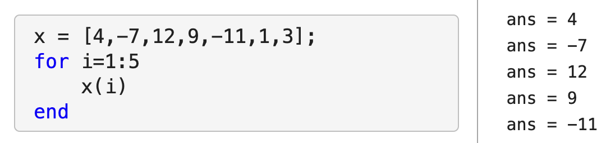
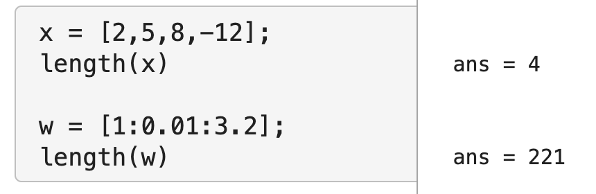
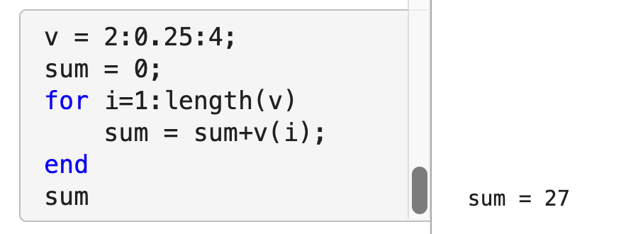
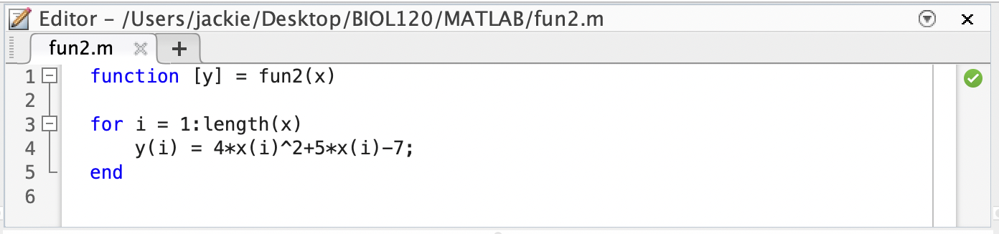
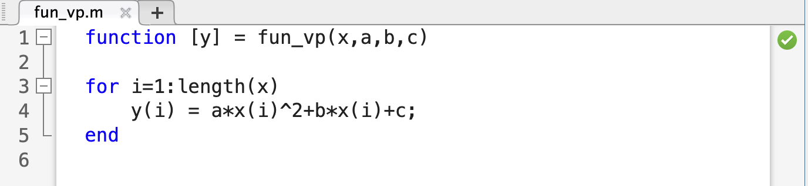
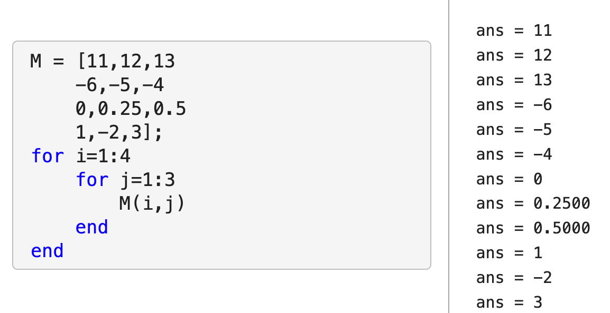
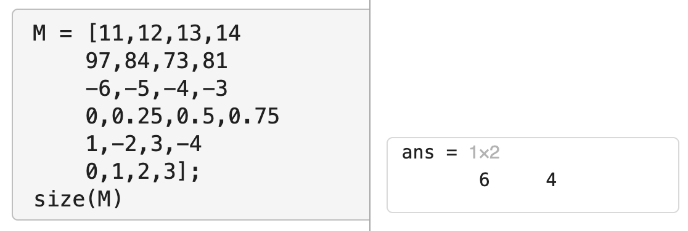
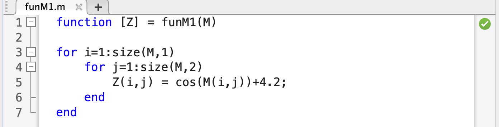
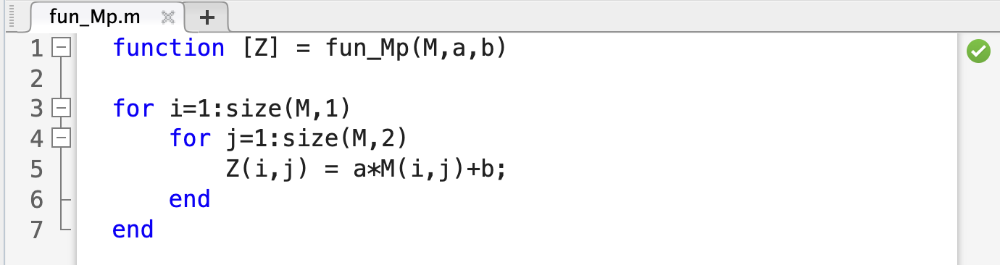

Chapter 10 Using for loops and Vector Manipulation
Checklist
Before we begin, be sure you’ve prepared the following:
- Open MATLAB.
- Navigate to your Biol120 working folder and create a new folder for today’s lab.
- Open a new live script and use the header text to place the title for today’s lab.
Today’s laboratory will be focused on using for loops effectively and manipulating vectors/matrices.
Before we start, however, write out the answers to these questions in your live script:
Question 1
State at least two scenarios where you would use a for loop.
10.1 for loops
- Using a for loop
In your livescript: for i=1:(number of times)\ (stuff to do)\ end
Important parts include:
- The word
for - The variable to loop through (
i=) - The values that variable takes on while MATLAB works through the for loop (
1:5) - What you want to happen during each iteration (
x(i)) - The word
endto signal that the for loop is over. 
- The word
10.2 Vector length
- Using the length command
- Sometimes it is convenient to loop through an entire vector. Why?
- You may want to access/print every element in a vector
- You may want to create a corresponding value for each element in a vector
- MATLAB has a command to tell you how many elements are in a vector (i.e. how long a vector is). This is the
length()function. - To run the length function, all you need to do is give it a vector as input.

Question 2
- Create a vector, \(v\), with all of the numbers from \(2\) to \(47\), using increments of \(0.3\).
-
Using the
lengthcommand, determine how many elements are in the vector \(v\). -
Go back to your midsemester project, where you created vectors with data that you plotted (either using a bar chart, scatter plot, or line plot). Take one of those vectors of data and use the
lengthcommand to determine its length. Note: be clear to put comments/text into your livescript to tell us what the data is that is included in this vector.
- Sometimes it is convenient to loop through an entire vector. Why?
- Using a for loop to do some algebra
As we saw in class, you can use a for loop to do simple algebra (i.e. sum all of the numbers from 1 to 100). Some things to note:
- you had to start the
sumat 0 since 0 is the additive identity (any number added to 0 gives you that number back) - you added to the
sumvariable iteratively inside the for loop
- you had to start the
Similarly, we can add all of the elements of a vector, \(v\). 
Question 3
- Create a vector, \(w\), with all of the numbers from \(1\) to \(2\), using increments of \(0.1\).
- Use a for loop to compute the product of all of the elements of w. Hint: You don’t want to start your product at 0 - you want to start it at the multiplicative identity.
10.3 Vector manipulation: functions and for loops
Writing a function with vector input(s) and output
Recall from Chapter 9: we can have a ‘single’ input with multiple values - i.e. input a vector of inputs  Note: in this example, the output is also a vector.
We can also do this with a vector of inputs for our independent variable and parameters as other inputs as well. 
Question 4
- Create a function for a linear model. This function should take as input a vector of \(x\)-values, and 2 parameters (one for the slope and one for the y-intercept) and output a corresponding vector of \(y\)-values.
- Run your function with at least \(3\) sets of different parameter values (i.e. choose different slopes and intercepts each time) and an \(x\) vector with values ranging from \(0\) to \(10\).
10.4 Nested (double) for loops
- Using a nested for loop to access/modify/create a matrix
In your livescript: for i=1:(number of rows)\ for j=1:(number of columns) (stuff to do)\ end end
Important parts include:
- The word
for, the variable to loop through (i=andj=), and the values that variable takes on while MATLAB works through the for loop, for EACH of the two for loops.\ Note: it is IMPORTANT that you use two DIFFERENT variables for the two loops. - What you want to happen during each iteration inside both loops.
- The word
endto signal that the for loop is over for each of the loops. 
- The word
10.5 Matrix dimension
- Using the size command
MATLAB has a command to tell you the dimensions of a matrix (i.e. the number of rows and columns). This is the
size()function.To run the size function, all you need to do is give it a matrix as input. 
Question 5
- Create the following matrix: \[M = \begin{bmatrix} 0 \ \ \ \ \ \cfrac{7\pi}{6} \ \ \ \ \pi \\ \cfrac{\pi}{6} \ \ \ \ \cfrac{5\pi}{4} \ \ \ \ 2\pi \\ \cfrac{\pi}{4} \ \ \ \ \cfrac{4\pi}{3} \ \ \ \ 3\pi \\ \cfrac{\pi}{3} \ \ \ \ \cfrac{3\pi}{2} \ \ \ \ 4\pi \\ \end{bmatrix}\]
-
Using the
sizecommand, determine the dimensions of the matrix \(M\).
10.6 Matrix manipulation: functions and nested for loops
- Writing a function with matrix input(s) and output
Another way to have a ‘single’ input with multiple values is to input a matrix of inputs  Note: in this example, the output is also a matrix.
We can also do this with a matrix of inputs for our independent variable and parameters as other inputs as well. 
Question 6
-
Create a function that transforms data from one matrix to another using the
sinfunction and a constant vertical shift. The function you create should take as input a matrix of values for the independent variable, and 1 parameter (the value corresponding to the vertical shift). The output of this function should be a corresponding matrix, with each entry equal to the sine of the corresponding entry plus the vertical shift. Note: if \(x\) is the entry in the original matrix and \(b\) is the shift parameter, the corresponding entry, \(y\) in the new matrix should be: \[y = sin(x)+b\] - Run your function using the matrix \(M\) you created in Question 5 as the matrix of values for the independent variable and at least 2 different vertical shifts (\(b\) values).
-
Create a function that transforms data from one matrix to another using the
Submission
Don’t forget to submit your live script file (with all of the questions answered - via text or code) and any function files (m files) you have used in answering the questions on Canvas!